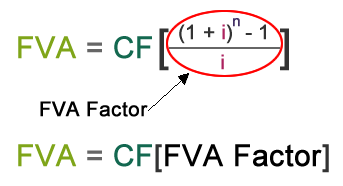

A fourth way to calculate FVA is using a table of FVA factors. Mathematically, the FVA Factor represents the calculation within the brackets of the FVA formula.

If you know the FVA Factor, you can simply multiply it by CF to find FVA. Let's solve the same problem again using an FVA Factors table. The intersection of 3 in the left column and 10% in the top row shows the FVA factor. Then multiply the FVA factor by the CF = 100. The total matches our previously factored equations.
\(FVA=100[3.31]\)
\(FVA=331.00\)
\(FVA=331.00\)